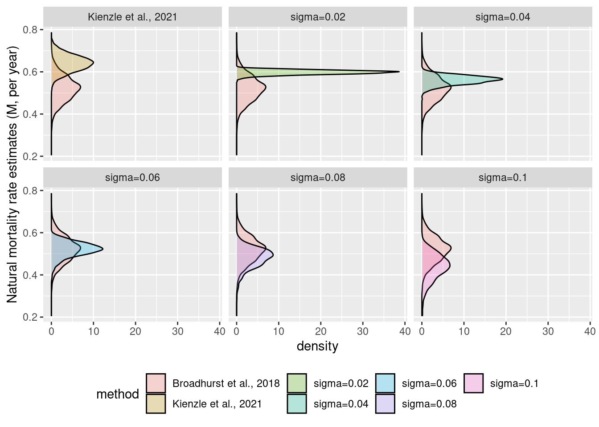

The drifting M issue
Background
Over the years, we noticed that estimates of natural mortality (M) increased. Somewhat cynically we assumed this was partly related to a revised empirical method by Amy Then that produced higher estimates of M and so a corresponding lower estimate of F: suddenly stock assessments were more optimistic and everyone’s happy (avoiding difficult conversations that scientists, managers and industry have to have when a resource is over-exploited). Evidence of the “drifting M issue” can be found in the series of estimates we published over the year, where M was estimated from 0.52 \(\pm\) 0.06 per year (Broadhurst et al., 2018) to 0.64 \(\pm\) 0.04 (Kienzle et al., 2021).
We are concerned that this issue arise as an artefact of modelling the dynamic of the fishery using model that do not allow for variation in catchability. We suggest that increasing estimates of M are likely caused by increasing catchability over the years because (a) there are ample evidence of changes in catchability reported in the literature, and (b) variation of fishing power and availability are commonly used in stock assessments.
There has been no data collected in this fishery that documents, or suggest, any variation in fishing power. We caution the reader that, hence, the modelling presented below is highly speculative. Yet, we think that given the widely documented phenomena that (a) fishing power increases catchability over time and (b) increasing abundance increase catchability. Therefore accounting for this process would be useful. And deriving its effects on quantities relevant to fisheries managers important when management decision will be made.
Method
We modelled time-series of increases of catchability over time using a random walk, where catchability is set to 1 in first year of the time-series (2004/05) and then increased it randomly according to the absolute value of a Gaussian distribution with mean equal to 0 and standard deviation equal to \(\sigma\) (\(N(0, \sigma)\)) allowing catchability to increase from year to year (note that no decrease is allowed using this approach).
Anchoring the model to \(M=0.52 \pm 0.06\): using a range of \(\sigma\) (0, 0.02, 0.04, 0.06, 0.08 and 1) we generated a thousand hypothetical time-series of increase in catchability for each value of \(\sigma\); fitted the best model to the data by maximum likelihood; and derived (1) a distribution of estimates of M and (2) a distribution of values of the negative log-likelihood. Using estimates of M, we assessed which value of \(\sigma\) provided the most overlapping distribution of M with \(M=0.52 \pm 0.06\). Using negative log-likelihood values, we assessed how frequently a model allowing for increasing catchability fitted the data better. Finally, using a thousand random walks with parameter \(\sigma=0.06\) to represent increasing catchability over time, we evaluated the effect it has on quantities useful for the management of this fishery.
The distributions of M are shown below
The distributions of the negative of the log-likelihood shown below indicate that while it is possible for a model assuming increasing catchability over time to reach a better fit (a lower negative log-likelihood value), in the majority of cases including a time series of increasing catchability led to worst fit (higher values of the likelihood). In other words, it is not impossible that a time series of data about variation of catchability to improve the fit upon the current best model.

A comparison between simulations of various magnitude of random walk (\(\sigma\)) and estimates of M used as reference (M=0.052 \(\pm\) 0.06 from Broadhurst et al., 2018) suggests that assuming an increase of catchability of \(\sigma=0.06\) leads to natural mortality estimates consistent with the reference.

Time series of random walk with parameter \(\sigma=0.06\) are shown on the figure below
The effect of increasing catchability using a random walk with parameter (\(\sigma=0.06\)) on fishing mortality estimates are shown below
Conclusion/discussion
Given that there are little evidence of technological improvement in this fishery over the years, apart from attrition due to less efficient fishers leaving this increasingly competitive fishery, it might very well be that the alleged increase in catchability is due in large part to the increase abundance of the stock (a density dependent effect). Future work could try to disentangle factors that could explain an increase in catchability between (1) variations of fishing power; (2) variation of abundance; (3) …